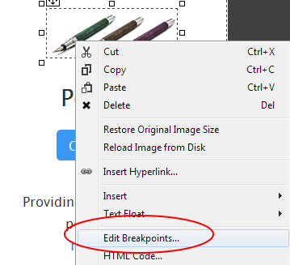
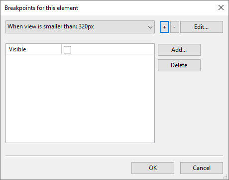

In order to create dynamic responsive websites, RocketCake has a built-in editor for creating and modifying breakpoints.
What is a BreakPoint?
A breakpoint is simply a size of the screen which triggers certain elements on your website to change: They can appear, go away, change their font size or similar. This is very useful for controlling exactly how the website looks on different devices.
For example: When your website is viewed from a computer with a big screen, you show a lot of images. But those images are not very informative and are only in the way when viewed from a device with a very small screen. So it would be nice to hide those images when the screen is small. With a breakpoint, you can say for example: "If the screen is smaller than 480 pixels, then don't show these images". That's it.
How to create a BreakPoint
Using RocketCake, creating a Breakpoint is very easy. As example, we take a website, and make an image disappear if the website is shown on a device with a screen width smaller than 320 pixels.We take an example website like this here:
It looks ok on a normal screen size. When the size is reduced to a smaller width, like here:

It would be nice to hide the image with the pens on it, to have more space. To do this, just right-click on the image with the pens, and select "Edit Breakpoints".

Then the breakpoint editor will appear. Do the following:
The result should look like this:

If you now view the website with a screen width smaller than 320 pixels, the image will not be visible. You can also see this in RocketCake. If you move the slider on the bottom of the page to a bigger size, the image will appear again:

You can have as many breakpoints per element as you like. You can change the font size, position, width, and other properties using that.
If you want to use Breakpoints in your website, keep in mind that it works like this: Design the website with the biggest supported resolution in mind. With the breakpoints, you can then make changes to your website for smaller screen sizes. However, if you don't want to use Breakpoints at all, this is fine as well. If it works without, then this is even better.
Copyright © by Ambiera e.U.